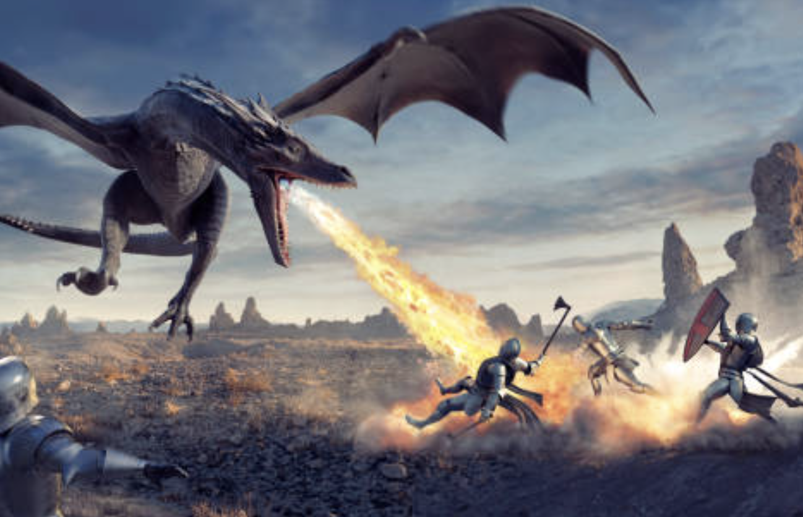

Why We Love One-Shots
One-shots are a casual way to get a session of D&D in without the legwork that comes with a campaign. Players can try out new builds and personalities, while DMs don't have to worry about managing a campaign, keeping notes, or writing a continuous narrative.
Seeing as one-shots lack the commitment of an extended campaign, they provide a number of unique benefits:
Switch Up the Group Dynamic
One-shots are the perfect time to allow aspiring DMs at your table to step up for a session. While long-term campaigns might be daunting for a new DM, one-session adventures that don't require as much backstory, planning, and management are excellent ways to gain experience. One of the most prominent benefits of this is that it gives your table's "forever DM" a break.
Try New Things
If you're anything like me, you have 10 janky character builds ready to go at all times. One-shots are the perfect time to try out your new creations without the stakes of being stuck with the same character for 100 sessions (or until they meet their untimely demise).
Play D&D Without the Strings
Agreeing to play D&D usually comes with a commitment. If your group can't dedicate a night every week (or two … or four … or eight) to D&D, one-shots are the perfect option to get some game time while you have everyone together. If you're hanging out with friends and looking for something to do, a one-shot is much easier to put together than a campaign!
Enjoy a Themed Play Experience
One-shots work particularly well for the over-the-top spooky or goofy themes these celebrations often inspire. While these grandiose tropes would get tiresome over the course of an extended campaign, one-shots are often the perfect dose of festive holiday spirit!
Tips for Running One-Shots
While they may not have as many gears as a full-blown campaign, one-shots can be deceptively tricky to run well. Here are some tips to help you run an excellent one-shot:
Keep the Intro Short
When time is of the essence, introducing characters and establishing the story needs to be fast-forwarded compared to a long-term campaign. If it takes the party an hour to describe their characters, decide if they want to work together, then negotiate their contract, you'll probably have to cut things from your planned adventure.
Expedite Combat
The best way to reduce the time investment required for combat is to set a "retreat scenario" for the party's opposition. Maybe the bandits your party is facing will run if their leader is killed? Or perhaps an owlbear with less than half of its hit points can be scared away with a Charisma (Intimidation) check?
Vary the Play
One-shots should visit all aspects of D&D play—combat, exploration, and social interaction—to ensure that players are given a chance to make their character feel effective.
Our Favorite One-Shots
Here are some of our favorite one-shots from published D&D books:
- Death House - A spooky adventure from Curse of Strahd.
- The Price of Beauty - An adventure full of exploration and mystery from Candlekeep Mysteries.
- Salvage Operation - A nautical tale from Ghosts of Saltmarsh.